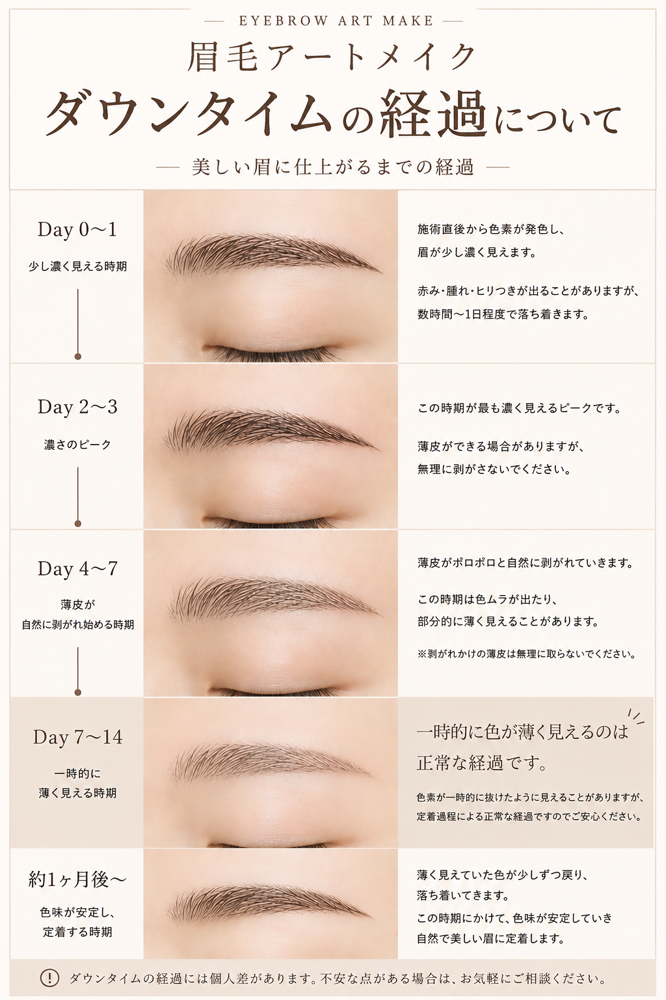
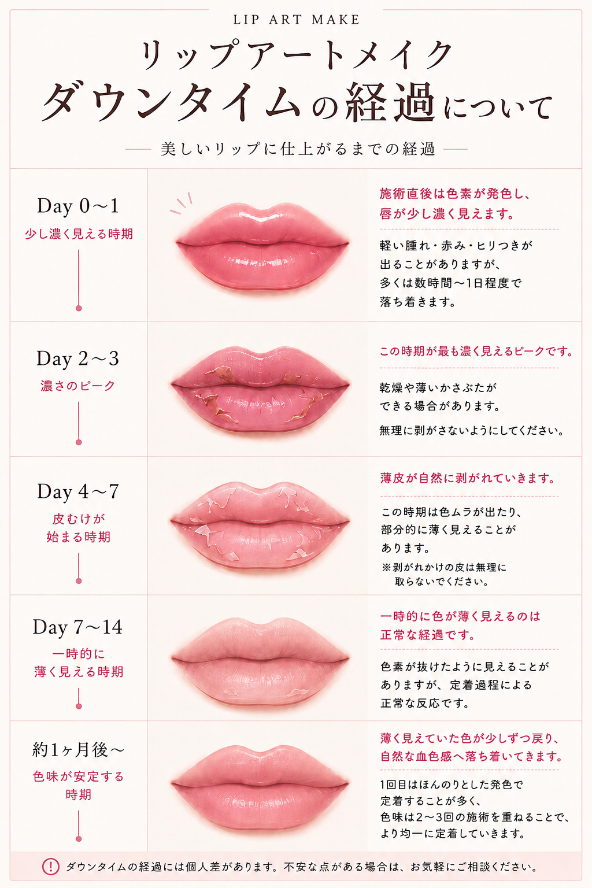

アートメイクについて
アートメイクは医療行為です。施術に伴い、以下のような症状やリスクが生じる可能性がございます。施術をお受けになる前に、これらのリスクについて十分にご理解いただきますようお願いいたします。
（疼痛／発赤／腫脹／内出血／感染／創傷治癒の遅延／瘢痕／アレルギー／色素沈着／色素の定着不良／色素の変性や拡散 等）
ご予約前に、以下の内容を必ずご確認ください。
共通重要事項と施術後の注意は、全員の方がお読みください。 あわせて、ご希望の施術の項目もご確認ください。
アートメイクは医療行為です。施術に伴い、以下のような症状やリスクが生じる可能性がございます。施術をお受けになる前に、これらのリスクについて十分にご理解いただきますようお願いいたします。
（疼痛／発赤／腫脹／内出血／感染／創傷治癒の遅延／瘢痕／アレルギー／色素沈着／色素の定着不良／色素の変性や拡散 等）
持病がある方、通院・治療中の方、内服薬や外用薬を使用中の方は、内容によって施術をお受けできない場合がございますので、必ず事前にお申し出ください。
以下に該当する方は、施術をお受けいただけません。
重度の糖尿病（HbA1c7.0以上）
重度の高血圧
重度の心臓病
てんかん
免疫抑制状態
ステロイドの長期内服中の方
抗血栓薬を内服中の方など、出血しやすい方
ケロイド体質
全身性感染症
重度の金属アレルギー
局所麻酔アレルギー
妊娠中、または妊娠の可能性がある方（安定期で主治医の許可がある場合を除く）
施術部位の皮膚疾患（ニキビを含む）
重度のアトピー性皮膚炎
発熱・体調不良のある方
口唇ヘルペス発症中（リップ）
緑内障・白内障（アイライン）
まぶたが薄く、毛細血管が透けて見えている方（アイライン）
以下に該当する方は、施術の可否を確認いたしますので、必ず事前にお申し出ください。
高血圧で治療中の方
授乳中の方
傷跡のある部位（傷が完治してからの施術となります）
事前に美容施術を受けた方（内容によっては、当日お受けできない場合がございます）
上記以外の場合も、体調や皮膚の状態によっては、医師・看護師の判断により、施術をお受けできないことがございます。
アートメイクは1回では完成しません。
必要な施術回数には個人差がございます。
通常2〜3回の施術を重ねて定着させていきます。
2回目の施術は、1回目から2〜3ヶ月後（最短でも4週間以上）が目安です。肌の状態によっては、さらに間隔をあけていただく場合がございます。
1回目の施術後に色が薄く感じられたり、一部が抜けたりすることがございますが、2回目以降の施術で調整していきます。
基本の仕上がりが整った後は、1年を目安にメンテナンス（リタッチ）をおすすめしております。
※1回の施術のみでの完成をご希望の場合は、施術をお受けできない場合がございます。
肌質や体質によって、色素の定着には個人差がございます。特に、以下に該当する場合は影響が出やすくなります。
脂性肌（オイリー・混合肌）
施術時の出血が多い方
瘢痕・傷跡のある部位
他院でアートメイクを受けたことがある方（修正をご希望の場合を含む）
ボトックス・ヒアルロン酸などの注入や美容整形、糸リフトなどを受けた方（効果が薄れたあとに、デザインが合わなくなる場合がございます）
上記に該当する場合、色素が定着しにくく、オレンジ・ピンク・グレーなどに色味が変化する可能性がございます。また、修正できる範囲が限られる場合や、皮膚の状態によっては施術をお受けできない場合がございます。
他院のアートメイクの上に重ねる場合は、既存の色素の影響で、色味が思いどおりに出ない場合や、眉では毛並み感が出にくくなる場合がございます。
仕上がりには個人差がございます。
ご希望どおりの仕上がりを保証するものではございません。
骨格やお顔の左右差などにより、完全に左右対称の仕上がりにすることは難しい場合がございます。
デザインは施術前に十分にご相談ください。ミリ単位のご要望や、施術直後からの完璧な色味には、対応いたしかねます。
施術後のデザイン変更は困難です。また、アートメイクは完全に消えるものではありません。
色素は、きちんと定着した場合も、肌のターンオーバーに伴い、時間をかけて徐々に薄くなっていきます。
時間の経過とともに色素が広がり、線が太く見えたり、毛並み感が薄れる場合がございます。
使用している色素はMRI検査に問題ないとされていますが、今後の検査機器の変更に備え、MRI検査を受ける際は、必ず医療機関および担当医にお伝えください。
無断キャンセルの場合、今後のご予約をお断りする場合がございます。
当日のキャンセルは、キャンセル料が発生する場合がございます。
遅刻された場合は、施術内容を変更する、または施術をお受けできない場合がございます。
仕上がりがご希望の色や形と異なる場合も、施術後の返金・無償での修正はお受けしておりません。
施術後に自己判断で医薬品の使用や処置を行った場合
注意事項を守られなかった場合
ダウンタイム中に不適切なケアを行った場合
上記に該当する場合に生じた不調やトラブルについては、責任を負いかねる場合がございます。
施術部位の写真を撮影する場合がございます。
症例写真を掲載する際は、事前に同意をいただき、個人が特定されない形で使用いたします。無断で使用することはございません。
アートメイクは医療行為であり、施術にあたっては一定のリスクが伴うことをご理解ください。
通常2〜3回の施術を重ねて完成させていきます。
ダウンタイムは約1週間が目安です。
施術後の経過や仕上がりは、ご自身のケアや自己管理によって大きく左右されます。
施術後1週間〜10日程度は、以下の行為をお控えください。
施術部位を直接濡らすこと（洗顔・入浴・シャワーの際は、施術部位に水がかからないよう、できるだけ気をつけてください）
※ヘアラインの洗髪については、ヘアラインの項目をご確認ください。
多量飲酒
また、以下の点にもご注意ください。
紫外線を避けてください。
かさぶたを無理に剥がさないでください。
施術後の皮膚は傷つきやすく、感染のリスクがございます。施術後1週間〜10日程度は感染予防に努めてください。
スポーツ・サウナ・ホットヨガなど、発汗を伴う行為
長時間の入浴
温泉・プール・海水浴など、不特定多数が利用する水場に入ること
上記の行為は、感染や色素の定着不良につながる可能性があるため、お控えください。
ダウンタイムは約1週間が目安です。ただし、感染予防のための各種制限は1週間〜10日程度続けてください。
期間中は、赤み・腫れ・熱感・痛みなどが出ることがございます。
一時的に色が濃く見えたり、薄く見えたりすることがございますが、通常の経過です。
色素の定着過程で、一時的に色ムラが出る場合がございます。
最終的な色素の定着率は、30〜50％程度が目安です（部位や肌質により異なります）。
旅行や結婚式など大切なご予定がある場合は、ダウンタイムを考慮して日程をご調整ください。
軟膏で保護している間は、施術部位をできるだけ濡らさないようにしてください。
濡れた場合は、こすらずに優しく押さえて水分を拭き取ってください。
施術後は乾燥しやすいため、軟膏でこまめに保湿してください。
軟膏は1日3〜5回、1週間〜10日程度塗布してください。
レーザー・ピーリングなど、肌への負担が大きい施術は、施術の前後1ヶ月お控えください。
上記以外の美容施術やマッサージは、施術後2週間お控えください。
眉アートメイクは、皮膚の浅い層に色素を入れ、眉の毛並みを描いたり、眉メイクをしたような仕上がりに整えたりする施術です。
ボトックス施術後は眉の位置が変化する場合があるため、アートメイクまで1〜2週間ほど間隔を空けることをおすすめしております。
眉の脱色は、施術日の1週間以上前にお済ませください。
施術当日は、普段どおりの眉メイクをしてご来院いただけると、デザインの参考になります。
軟膏は薄く塗布してください。塗りすぎにはご注意ください。
施術後は肌の状態が落ち着いてから、眉メイクを再開してください。

骨格や眉の生え方に合わないデザインは、お受けできない場合がございます。
施術部位のホクロ・イボは避けて施術いたします。
複数回の施術を重ねながら、仕上がりを調整していきます。
アイラインアートメイクは、まつ毛の生え際に色素を入れ、目元を自然に引き立てる施術です。
まつ毛エクステは施術の妨げとなるため、当日までに外してご来院ください。
施術中はコンタクトレンズを外していただきます。コンタクトケースまたは眼鏡をご持参ください。
軟膏は薄く塗布してください。塗りすぎにはご注意ください。
施術後1週間程度は、目元に異物感や乾燥が生じる場合がございます。
ドライアイ用の目薬をご使用ください。クールタイプの目薬は避けてください。
コンタクトレンズは施術24時間後から使用できます。違和感がある場合は、症状が落ち着くまでお控えください。
まつ毛エクステ・まつ毛パーマ・その他の美容施術は、アイライン施術の2週間後からお受けください。
アイシャドウ・ビューラー・マスカラ・アイライナーなど、目元のメイクは、症状が落ち着いてから再開してください。
太いライン、跳ね上げライン、粘膜へのラインは、対応しておりません。
涙の量・出血・皮膚の状態により、仕上がりに左右差が生じる場合がございます。
複数回の施術を重ねながら、仕上がりを調整していきます。
リップアートメイクは、唇に色素を入れ、自然な血色感や輪郭を整える施術です。
ご予約が確定した時点から、唇をこまめに保湿してください。
唇の角質が厚い、または乾燥や炎症がある場合は、色ムラや色素の定着不良の原因となります。リップスクラブなどを製品の推奨頻度で使用し、乾燥や皮むけのない状態に整えてください。
むけた皮は無理に剥がさず、自然に落ち着くまでお待ちください。
乾燥が強い場合や保湿が不十分な場合は、当日の施術をお受けできないことがございます。その際は、キャンセル料として施術料金の全額をご負担いただく場合がございます。
当日は口紅やティントリップを落とし、保湿のみの状態でご来院ください。
ヒアルロン酸を注入された方は、施術までに期間を空ける必要がございますので、事前にお申し出ください。
ヘルペスウイルスは多くの方が保有しており、疲労・ストレス・刺激などにより発症することがございます。特にリップアートメイクは唇に刺激が加わるため、発症する可能性がございます。ヘルペスを発症している場合は、施術をお受けいただけません。
発症後の施術は、症状が完全に治まってからとなります。
施術後にヘルペスが発症した場合は、お早めにご連絡ください。
※必要に応じて、ヘルペス予防・治療の内服薬の処方が可能です。
施術後は乾燥しやすくなるため、軟膏をこまめに塗布してください。
施術後2〜3日は、腫れや熱感が生じる場合がございます。
施術直後は、内出血の影響で赤黒く見えることがございますが、2〜3日ほどで落ち着きます。
その後、乾燥や皮むけが生じる場合がございます。むけた皮は無理に剥がさず、自然に落ち着くまでお待ちください。
唇を噛んだり舐めたりすると、色素の定着不良の原因となるため、お控えください。
施術後に飲み物を飲む際は、ストローをご使用ください。
熱い飲食物・香辛料・着色の強い飲食物（コーヒー・ワインなど）はお控えください。
飲食のあとは、唇をこすらず、優しく押さえて拭き取り、保湿し清潔に保ってください。
口紅・カラーリップの使用は1週間お控えください。
洗顔やクレンジングの際は、唇に水やクレンジング剤がつかないよう、できるだけ気をつけてください。
施術後1週間程度は、キスやペットとの口元の接触（ペットにキスをする、唇を舐められるなど）を避け、生ものの摂取にもご注意ください。

色素の定着には個人差がございます。
1回の施術では、色がうっすら残る程度です。しっかり定着させるには、3〜5回程度かかる場合がございます。
リップアートメイクは唇を大きくする施術ではないため、ご自身の唇の範囲を超えるデザインはお受けできません。
複数回の施術を重ねながら、仕上がりを整えていきます。
ヘアラインアートメイクは、生え際や頭皮に色素を入れ、髪の毛が生えているような印象を目指す施術です。
当日は洗髪して、清潔な状態でご来院ください。
ヘアカラー・脱色は、施術の前後2週間お控えください。
施術後は一時的に赤み・腫れ・かさぶたが生じる場合がございます。
軟膏は薄く塗布してください。塗りすぎにはご注意ください。
施術当日は、髪にインクが残ることがあるため、服や枕カバーへの付着にご注意ください。
施術後24時間はシャンプーをお控えください。
その後は施術部位を強くこすらず、優しく洗髪してください。
2週間程度は爪を立てての洗髪や強いマッサージはお控えください。
髪質・毛量・肌質により、仕上がりや定着には個人差がございます。
汗・皮脂・外的刺激により、色ムラや退色が生じる場合がございます。
髪の分け目やスタイリングにより、見え方が変化する場合がございます。
複数回の施術で定着させていきます。
色素は時間の経過とともに徐々に薄くなりますが、完全に消えるものではありません。